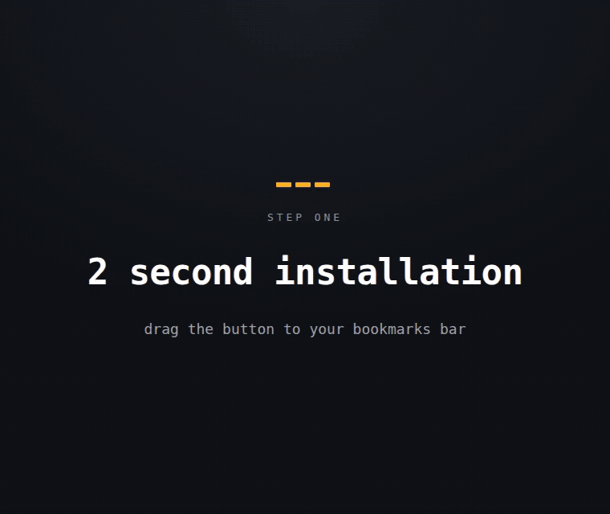

bookmarklet
AI Web Capture
Fast and easy feedback - straight to your agent or Github.
2-second install · free forever
Walkthrough

First run
- Visit any page.
- Show the bookmarks bar if AI Web Capture isn't visible (
Cmd/Ctrl+Shift+B). - Click AI Web Capture — a panel appears bottom right.
- Save the capture to a folder your Claude Code session can reach, or file it straight to a GitHub issue.
What about Firefox support?
Firefox can't hand a folder to a web page, so captures download instead. Point the download folder at your Claude Code session folder and the result is the same:
- Settings → General → Downloads → Save files to.
- Choose the folder your Claude session runs in.
- Capture as usual — each
.mdand.pnglands there.
Filing straight to a GitHub issue reads the folder back, so that part still needs Chrome or Edge.
What if dragging is blocked?
Create a bookmark manually and paste this as the URL:
Why use this
- Free forever
- No Chrome extension required
- Screenshots without a permission prompt
- Easy way to add feedback to your AI agents
- Fills GitHub issues for you, screenshot included
Open source
Code lives at github.com/philter87/ai-web-capture. Come by with feedback, bug reports, or just to poke around the code.
Chrome, Edge, Brave — full folder mode. Firefox — captures download.
Made by @philter87